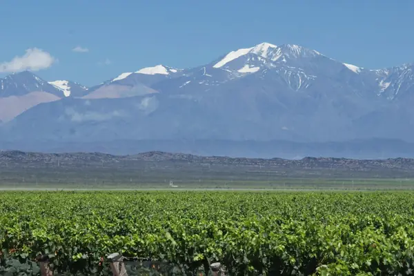

Home › Wine regions › Mendoza
Mendoza wine region

Photo: celso costa on Unsplash
High-altitude, plush reds.
High-altitude vineyards in the Andean foothills, led by Malbec.
The grapes of Mendoza
- Malbec (red): plum, blackberry, violet. Best known in Mendoza, Cahors.
Notable producers in Mendoza
- Catena Zapata
- Zuccardi
- Achával-Ferrer
- Norton
- Terrazas de los Andes
Mendoza wines to try
Catena Zapata Catena Malbec
High-altitude Malbec: plum, violet, blackberry and soft tannins.
Food: Asado, grilled steak
Bodega Weinert Tonel Único Malbec
Rare long-aged Malbec from large old casks: savoury and mature.
Food: Asado, game
Food to try with Mendoza wines
- Chilli con carne: Ripe, plush, low-tannin reds like Malbec and Zinfandel soften chilli heat and match the dish's smoky spice and beans.
- Beef tacos: Juicy, fruit-forward reds with soft tannins match spiced beef, salsa and cheese, and won't turn bitter against a little chilli.
- Lamb rogan josh: Warmly spiced but not fiery, this lamb curry suits soft, fruit-forward reds with peppery notes and gentle tannins.
- Cassoulet: Firm, tannic South-West French reds cut through duck fat, sausage and beans, the same pairing locals drink in Toulouse and Castelnaudary.
- Chicken fajitas: Smoky peppers, lime and chilli suit juicy, low-tannin reds like Malbec, or a chilled dry rosé when the salsa is hot.
- Nachos: Cheese, beef, salsa and jalapeños suit fruity, easy-going wines; soft Malbec, crisp rosé or zesty Sauvignon all handle the spice.
More wine regions in Argentina
The Wine Reference newsletter
New wines, stories and career guides, one email a week at most.
Over 18s only. Unsubscribe any time with one click. Your email is stored securely by Kit and never shared.
Support The Wine Reference
This guide is free, with no paywall. If it helped you choose a bottle, you can buy me a glass and keep it growing.
🍷 Buy me a glass